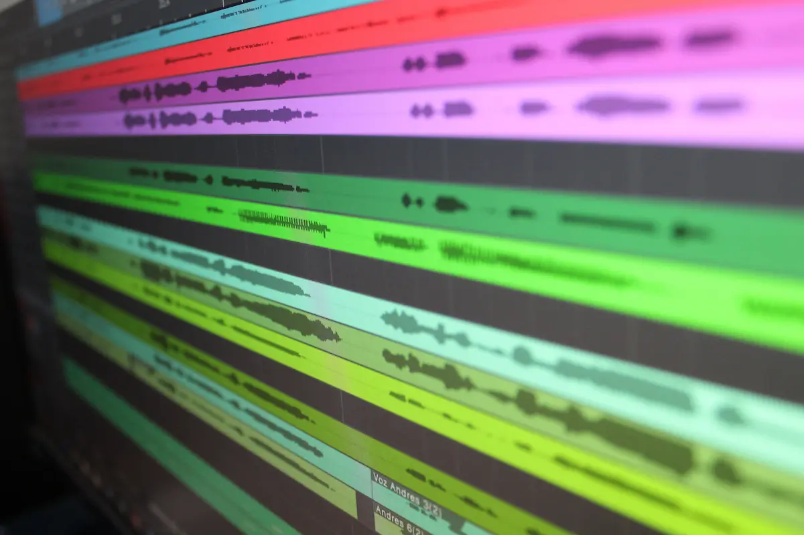
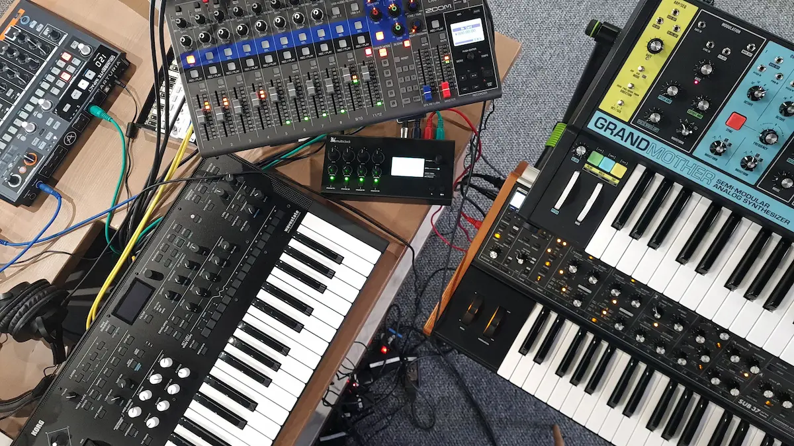
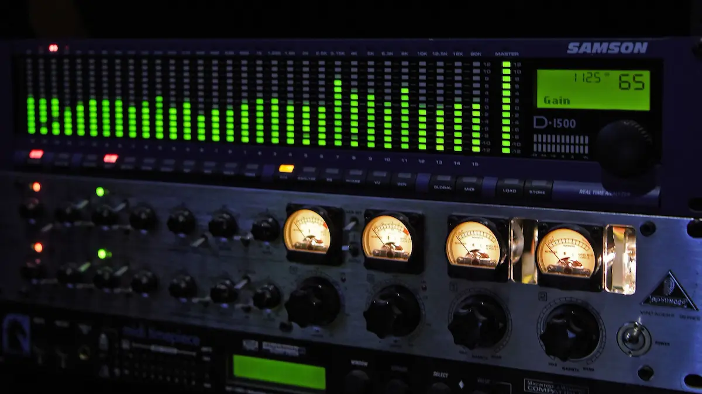

Estación de Trabajo Digital (DAW)

El software central donde conviven todas las etapas. Permite la grabación multipista, el corte y ensamble de audio, la secuenciación MIDI y la automatización de parámetros en una sola línea de tiempo.
Una vez capturadas las tomas, la producción es la etapa donde se organizan, editan, componen y pulen las pistas dentro del entorno digital para dar forma a la obra musical.

El software central donde conviven todas las etapas. Permite la grabación multipista, el corte y ensamble de audio, la secuenciación MIDI y la automatización de parámetros en una sola línea de tiempo.

Las herramientas para componer sin necesidad de instrumentos acústicos. El controlador envía datos de notas y dinámicas para interpretar sintetizadores, baterías sampleadas y pianos virtuales.

La limpieza y ajuste del material antes de la mezcla final. Incluye tareas como afinación vocal, cuantización rítmica, eliminación de ruidos y la aplicación de compresión y ecualización correctiva.